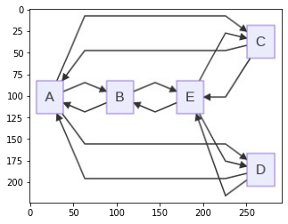

Tutorials¶
This is list of publicly available Tutorials for using Mermaid.JS . This is intended as a basic introduction for the use of the Live Editor for generating diagrams, and deploying Mermaid.JS through HTML.
Note that these tutorials might display an older interface, but the usage of the live-editor will largely be the same.
For most purposes, you can use the Live Editor, to quickly and easily render a diagram.
Live-Editor Tutorials¶
The definitions that can be generated the Live-Editor are also backwards-compatible as of version 8.7.0.
Chris Chinchilla: Hands on - Text-based diagrams with Mermaid
GitLab Unfiltered: How to Create Mermaid Diagrams
GitLab Unfiltered: Emilie adds a mermaid diagram to the handbook
World of Zero: I Learn How To Build Flowcharts and Signal Diagram’s in Mermaid.JS
Mermaid with HTML¶
Examples are provided in Getting Started
CodePen Examples:
https://codepen.io/CarlBoneri/pen/BQwZzq
https://codepen.io/tdkn/pen/vZxQzd
https://codepen.io/janzeteachesit/pen/OWWZKN
Mermaid with Text Area¶
https://codepen.io/Ryuno-Ki/pen/LNxwgR
Python Integration with mermaid-js¶
Here’s an example of python integration with mermaid-js which uses the mermaid.ink service. This is also working with colab and jupyter lab notebooks.
import base64
import requests, io
from PIL import Image
import matplotlib.pyplot as plt
graph = """
graph LR;
A--> B & C & D;
B--> A & E;
C--> A & E;
D--> A & E;
E--> B & C & D;
"""
graphbytes = graph.encode("ascii")
base64_bytes = base64.b64encode(graphbytes)
base64_string = base64_bytes.decode("ascii")
img = Image.open(io.BytesIO(requests.get('https://mermaid.ink/img/' + base64_string).content))
plt.imshow(img)
Output
